Minecraft Mob Vision
Détection multi-tâches : classifier + localiser 87 mobs depuis une capture
Pierre Roy
Le problème
Rappel pour les non-joueurs : un mob est une créature du jeu (animal ou monstre), une frame est une image du jeu.
Depuis une capture Minecraft 512×288, en une seule passe, sortir :
1 · Quoi
Lequel des 87 mobs est à l'écran.
→ tête classification, cross-entropy
2 · Où
Bounding box (cx, cy, w, h), normalisée YOLO.
→ tête régression, loss CIoU
Les deux d'un coup = volet détection (éligible bonus). Un seul CNN partagé, deux têtes.
Un dataset synthétique auto-labélisé
J'ai écrit un mod open-source qui fait apparaître chaque mob et tourne automatiquement autour pour le photographier.
- Boîtes calculées par projection 3D de la hitbox à l'écran → labels exacts, zéro annotation manuelle
- 22 809 frames · 87 classes
- Équilibré : ~262/classe, seulement 1.6× de déséquilibre
- 3 météos × cycle 24h complet × biomes × angles caméra
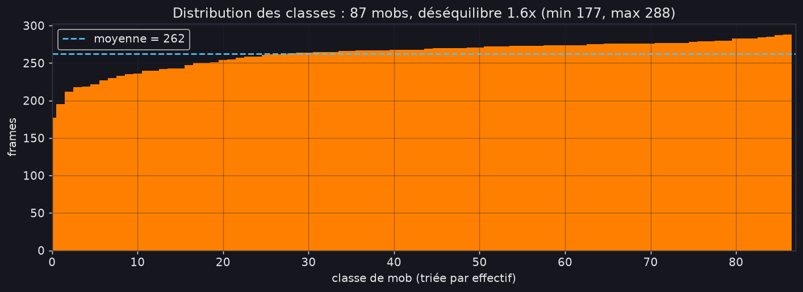
Vérité-terrain exacte, par projection
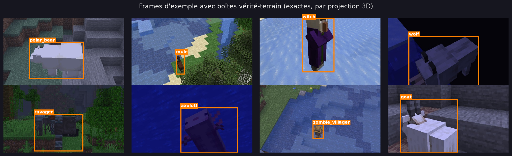
Aucun humain n'a labélisé ces boîtes. La seule ambiguïté restante est la vraie similarité visuelle entre mobs.
La boîte est calculée dans le jeu


Overlay de debug du mod : la hitbox 3D projetée à l'écran épouse le mob au pixel près. C'est exactement cette boîte qui devient le label, sans jamais la dessiner à la main.
La caméra orbite autour de chaque mob
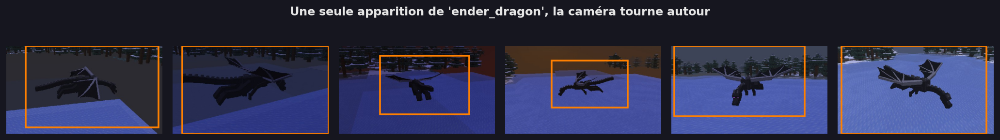
Même créature, même position : la caméra tourne et photographie à chaque pas d'angle. Des centaines de vues par mob, et la boîte suit toujours. Le mod tourne seul pendant des heures et remplit le dataset.
Le mod en action

Capture réelle (accélérée) : apparition du mob, orbite de la caméra et photo en boucle. Tout est automatique, jour et nuit, par toutes les météos.
Préprocessing : tuer le jour/nuit
Le même mob est lumineux à midi, presque noir la nuit. Cette luminosité est un bruit déterministe sans rapport avec l'identité.
EqualizeV : égaliser uniquement le canal V en HSV, ce qui neutralise la luminosité et garde l'identité couleur. Appliqué une fois à la construction du cache.
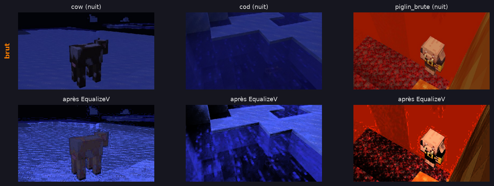
Augmentations légères, qui préservent l'identité
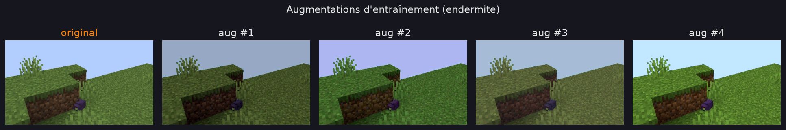
textures symétriques → 2× données, cx flippé
torches, teinte biome, dérive pack
absorbe les artefacts JPEG
+ un cache memmap uint8 sur disque : décoder les JPEG une fois, lire des tranches brutes chaque epoch → GPU-bound, pas CPU-bound.
Le modèle : MobDetector
│
▼ backbone timm (ConvNeXtV2-nano)
carte de features (B, C, H′, W′)
├─ tête cls : GAP→Drop→Linear → 87
└─ tête bbox : Conv 1×1→Pool4→MLP
→ sigmoid → (cx,cy,w,h)
global_pool=""→ garde la carte spatiale (pour la saliency et la position)- pool 4×4 de la tête bbox : position plus fine qu'un global pool, peu de params
- Interchangeable via
config.toml(MobileNetV4 ↔ ConvNeXtV2-nano) - ~16 M params, une seule passe
Stratégie d'entraînement
Transfer learning 2 phases
- Warmup (3 ep) : backbone gelé, on laisse les têtes aléatoires converger d'abord
- Fine-tune : dégeler, backbone à LR 10x plus faible que les têtes, pour adapter sans casser ImageNet
Loss = CE + CIoU
- CIoU > smooth-L1 : optimise la boîte entière + distance centres + ratio d'aspect, robuste à l'échelle
- Label smoothing 0.1 → pas de sur-confiance sur les sosies
Stack vitesse/robustesse : AMP · torch.compile · CosineAnnealingLR · channels-last · early stop sur 0.7·acc + 0.3·IoU
Comparaison des backbones
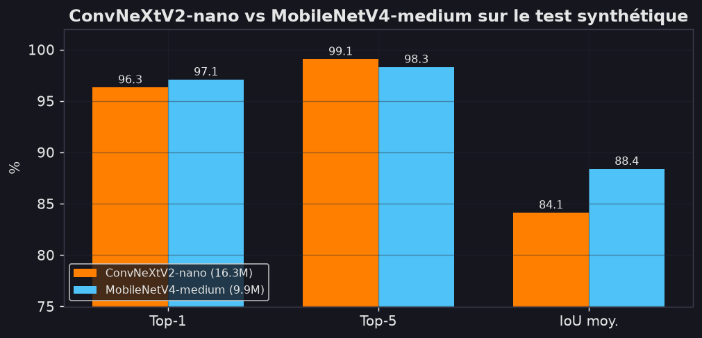
Testé : EfficientNet-B0 → MobileNetV4 small/medium → ConvNeXtV2-nano
Constat honnête : sur le test, m4-medium gagne en brut (Top-1 97.1%, IoU 88.4%) et est plus petit (9.9M).
On garde ConvNeXtV2-nano pour ce que les chiffres ne disent pas :
- saliency bien plus nette (slide suivant)
- meilleure généralisation aux vraies images web
Résultats sur le split de test, 653 images
ConvNeXtV2-nano · 87 classes · ~16 M params
Robuste dans toutes les conditions
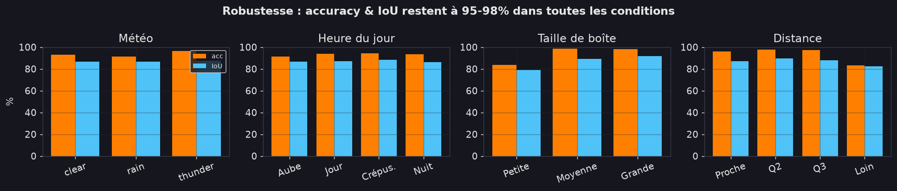
Accuracy 95–98% quelle que soit la météo, l'heure, la taille de boîte ou la distance. Aucun angle mort.
Analyse d'erreurs : deux types d'échec
| Vrai | Prédit | |
|---|---|---|
| ghast | → | happy_ghast |
| cow | → | sheep |
| tadpole | → | tropical_fish |
| donkey | → | hoglin |
Majorité : mob quasiment invisible
(dans l'eau, derrière un bloc, trop loin)
Reste : vrais sosies visuels
Même silhouette ou palette - dur même pour un humain.
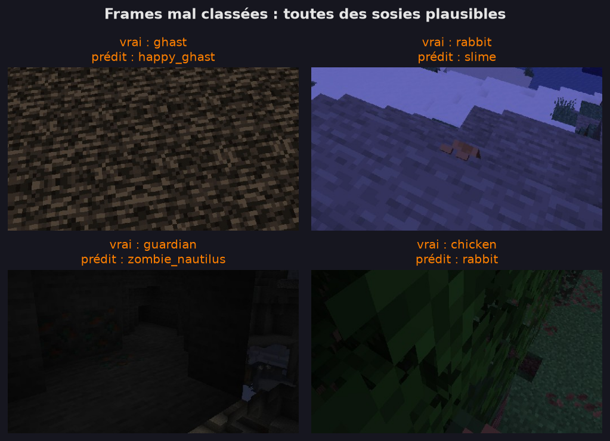
La longue traîne
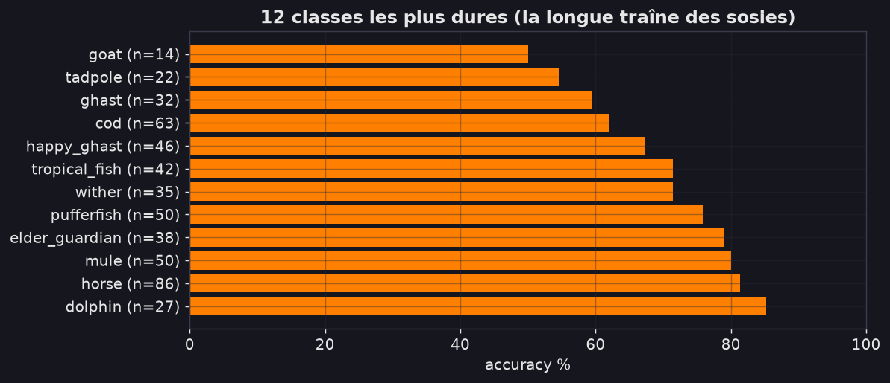
Les classes les plus dures sont des mobs aquatiques rares ou quasi invisibles, toujours majoritairement correctes.
Interprétabilité : que regarde-t-il ?
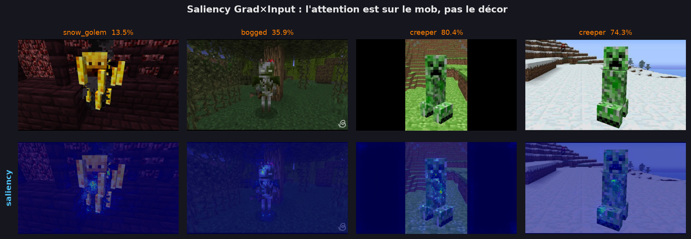
Grad×Input, pas Grad-CAM classique : les ops globales de ConvNeXtV2 (GRN, LayerNorm2d) + le GAP aplatissent le gradient dans l'espace → heatmaps diffuses. Le grad×input au niveau pixel reste net pour n'importe quel backbone. L'attention est sur le corps du mob, pas le décor.
L'évolution de la heatmap
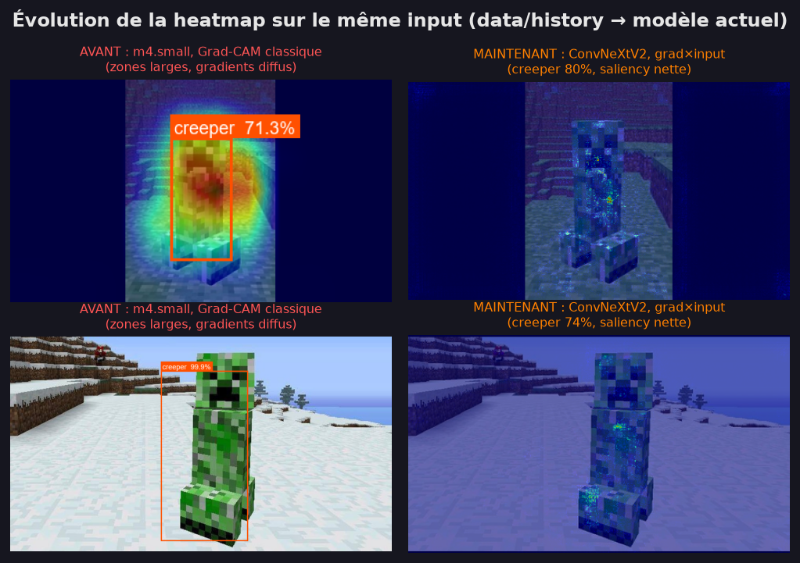
Mêmes inputs (data/history), itérations différentes :
- Avant (m4-small + Grad-CAM classique) : grosses zones diffuses, gradients étalés sur la moitié de l'image
- Maintenant (ConvNeXtV2 + grad×input) : saliency petite, nette, localisée sur le mob
Pas que cosmétique : le réseau actuel s'appuie sur des régions précises et discriminantes.
Prédictions sur de vraies images web
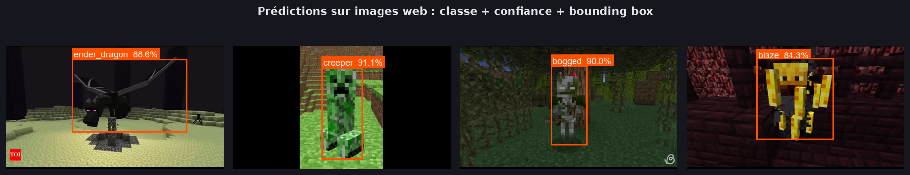
Screenshots pris sur internet (hors distribution synthétique) → classe + confiance + boîte, de bout en bout.
Conclusion
Ce qui a marché
- Labels synthétiques exacts : le modèle ne combat que la vraie ambiguïté
- Transfer learning sur backbone compact moderne, pas de zoo de détecteurs
- CIoU + EqualizeV = boîtes stables, pas de biais lumière
- Erreurs interprétables, saliency confirme l'attention
Pistes
- Détection multi-mobs (vraie tête + NMS)
- Petits mobs aquatiques peu contrastés → résolution + / loss petits objets
- Dataset de meilleure qualité → avec des images manuelles
Merci · Questions ?
Code & notebook : github.com/Ayfri/Minecraft-Mobs-Vision
Générateur de dataset : github.com/Ayfri/Minecraft-Images-Mobs-Generator